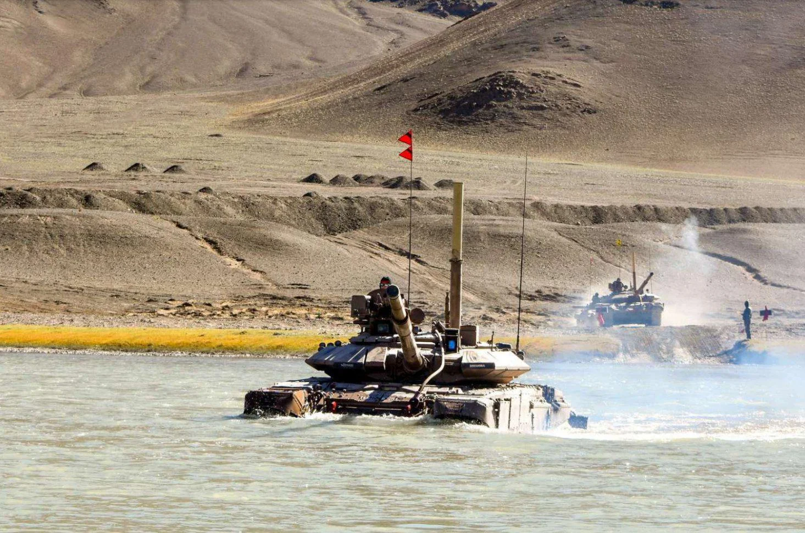

Indian Army's T-90 Bhishma tanks during winter exercises
The Indian Armed Forces are undergoing their most comprehensive modernization since independence, driven by evolving security challenges and technological advancements. With a budget allocation of ₹5.94 lakh crore (US$72.6 billion) for 2025-26, the modernization program focuses on indigenous development, technological superiority, and multi-domain integration.
Pillars of Modernization
Indigenous Development
Under the 'Make in India' initiative, domestic production now accounts for 68% of defense procurement, up from 30% in 2014. Key projects include:
- TEJAS MK-1A fighter jets
- Arjun MK-1A tanks
- INS Vikrant aircraft carrier
- Prachand attack helicopters
Artificial Intelligence
The Defense AI Council oversees 75+ AI projects including:
- AI-based surveillance systems
- Predictive maintenance for equipment
- Automated threat detection
- Decision support systems
Space & Cyber
Defense Space Agency initiatives:
- EMISAT electronic intelligence satellite
- Project Kusha missile defense system
- Defense Cyber Agency with 1,000+ specialists
- Quantum key distribution for secure comms
Unmanned Systems
Expanding drone capabilities:
- Rustom-2 MALE UAV
- ALFA-S swarm drones
- Naval autonomous vessels
- Counter-drone systems
Modernization Timeline
2023-2024
- Induction of S-400 missile systems
- Commissioning of INS Vikrant
- TEJAS MK-1A initial operational clearance
2024-2025
- Project Zorawar light tanks deployment
- Prachand helicopter squadrons formed
- Advanced Towed Artillery Gun System (ATAGS) rollout
2025-2027
- AMCA stealth fighter prototype testing
- Project 75I submarine construction begins
- Integrated Rocket Force establishment
2027-2030
- 6th gen fighter development
- Hypersonic weapons deployment
- Complete network-centric warfare capability
Comparative Analysis
| System |
Previous Generation |
New System |
Improvement |
| Main Battle Tank |
T-72 (1980s) |
T-90MS/Arjun MK-1A |
+300% firepower, +150% protection |
| Fighter Jet |
MiG-21 |
Rafale/TEJAS MK-1A |
+500% combat radius, AESA radar |
| Infantry Gear |
INSAS rifle |
SIG716/SiG Sauer |
+40% accuracy, modular design |
| Communication |
Analog radios |
Software-defined radios |
Encrypted, jam-resistant |
"Modernization isn't just about new equipment—it's about transforming how we think, train, and fight. The Indian Armed Forces are leapfrogging generations of technology to create a future-ready force." — Defense Analyst
Challenges Ahead
Budget Constraints
While defense budgets have increased, they remain below 2% of GDP, limiting procurement pace. Prioritization between:
- Strategic weapons vs conventional forces
- New acquisitions vs maintenance
- Imported vs indigenous systems
Technology Absorption
Integrating advanced systems requires:
- Specialized training programs
- Revised doctrine development
- Maintenance infrastructure
- Inter-service coordination
The Road to 2030
By the end of this decade, the Indian Armed Forces aim to achieve:
- Complete network-centric warfare capability
- 70% indigenous content in defense equipment
- Integrated theater commands
- Space-based surveillance constellation
- Cyber warfare superiority
This transformation will ensure India maintains strategic autonomy and can counter emerging threats in an increasingly complex security environment.
Back to All Articles